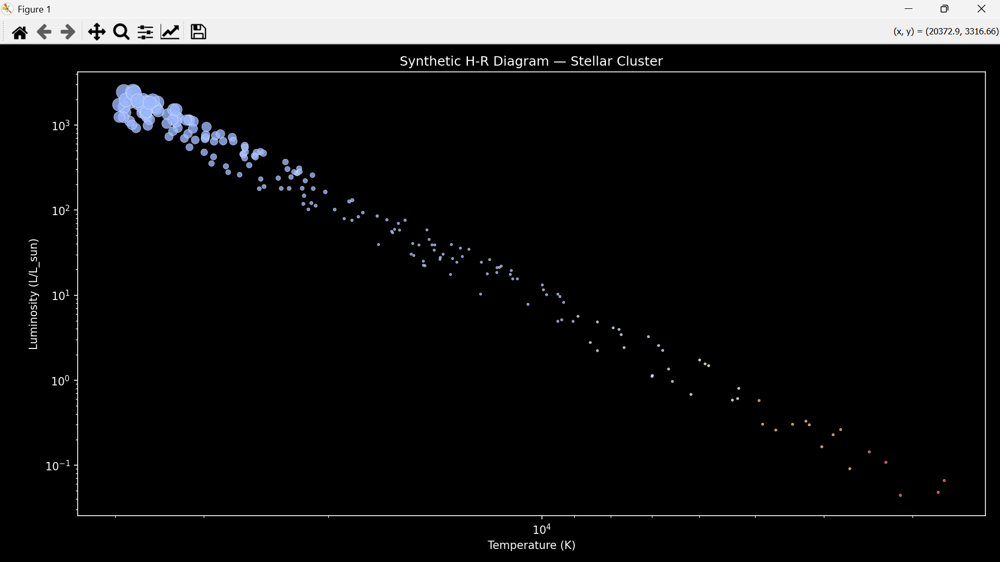

Purpose
Visualize a synthetic star cluster on the Hertzsprung–Russell diagram: plot luminosity vs surface temperature, color-code by spectral type, and size-code by luminosity. Understand the distribution of main sequence, giants, and hot stars in a cluster.
Background
The H-R diagram is a fundamental tool in astrophysics. Stars are plotted by their effective surface temperature (x-axis) and luminosity (y-axis). Hot, bright stars appear on the upper left; cool, dim stars on the lower right. This diagram reveals stellar evolution and population properties.
Methodology
- Generate a synthetic cluster with random temperatures (2500–40000 K).
- Compute approximate luminosity using L ~ T⁴ with random scatter.
- Assign colors according to temperature (red → blue mapping).
- Assign marker sizes proportional to luminosity.
- Plot using Matplotlib with logarithmic scales on both axes.
- Invert the x-axis to follow H-R diagram convention (hot left, cool right).
Pseudocode
Generate N stars
For each star:
Random temperature (2500-40000 K)
Luminosity ~ T^4 * random_factor
Assign color based on T
Assign marker size proportional to luminosity
Create pandas DataFrame to store stars
Plot scatter plot:
x = Temperature
y = Luminosity
c = color
s = size
Set x and y scales to logarithmic
Invert x-axis
Show figure
Python Simulation Code
import numpy as np
import pandas as pd
import matplotlib.pyplot as plt
plt.style.use("dark_background")
np.random.seed(42) # reproducibility
n_stars = 200
# Surface temperatures (K) — 2500K to 40000K
temperatures = np.random.uniform(2500, 40000, n_stars)
# Luminosity (L/L_sun) using a simple power law L ~ T^4 for main sequence
luminosities = (temperatures / 5778) ** 4 * np.random.uniform(0.5, 1.5, n_stars)
# Assign spectral color approximations based on temperature
def temp_to_rgb(T):
if T < 3500: return "#ff5b3a" # red
if T < 5000: return "#ffb25b" # orange
if T < 6500: return "#fff4d6" # yellow-white
if T < 9000: return "#cce0ff" # white-blue
return "#9bb7ff" # deep blue
colors = [temp_to_rgb(T) for T in temperatures]
# Assign marker sizes proportional to luminosity
sizes = np.clip(luminosities / np.max(luminosities) * 200, 5, 200)
df = pd.DataFrame({
'Temperature (K)': temperatures,
'Luminosity (L/L_sun)': luminosities,
'Color': colors,
'Size': sizes
})
fig, ax = plt.subplots(figsize=(10, 7))
scatter = ax.scatter(df['Temperature (K)'], df['Luminosity (L/L_sun)'],
c=df['Color'], s=df['Size'], alpha=0.8, edgecolors='w', linewidth=0.3)
ax.set_yscale('log')
ax.set_xscale('log')
ax.set_xlabel("Temperature (K)")
ax.set_ylabel("Luminosity (L/L_sun)")
ax.set_title("Synthetic H-R Diagram — Stellar Cluster")
# Invert x-axis: hot stars on left
ax.set_xlim(ax.get_xlim()[::-1])
plt.tight_layout()
plt.show()
Explanation
We create a synthetic dataset of stars with surface temperatures and compute luminosities. Each star is color-coded by temperature (red→blue) and marker size scaled by luminosity. Logarithmic axes highlight the wide dynamic range of stellar properties. Inverting the x-axis matches standard H-R diagram orientation.
Expected Output
A scatter plot of stars:
- X-axis: Temperature (hot left, cool right)
- Y-axis: Luminosity (log scale)
- Marker color: approximate stellar color
- Marker size: proportional to luminosity
